Entrega MySQL
by Mario Gil Ruiz
1. ¿Cuántos camioneros tengo en plantilla?
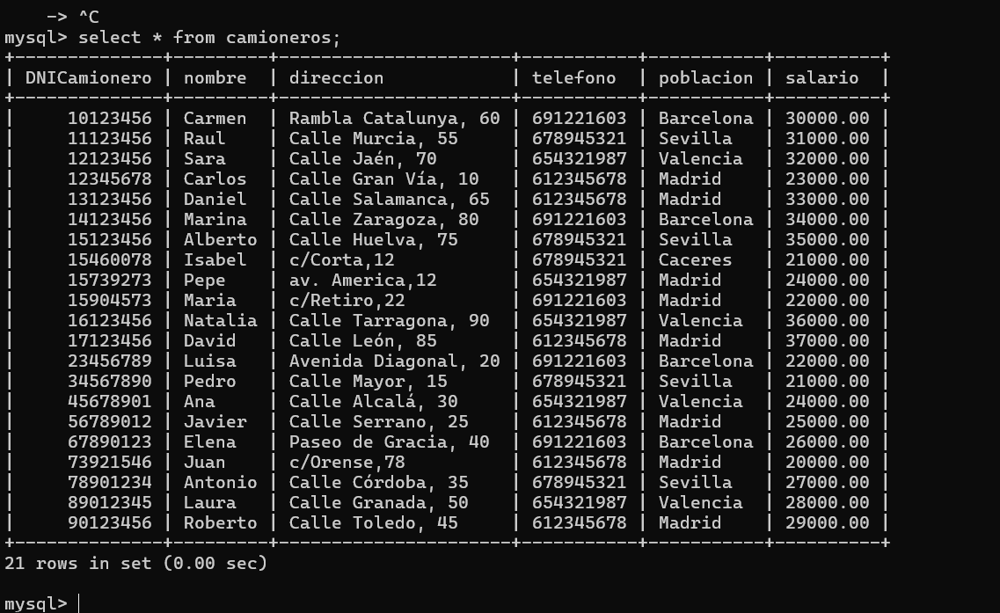
2.¿Cuál es el salario máximo? ¿Quién lo cobra?
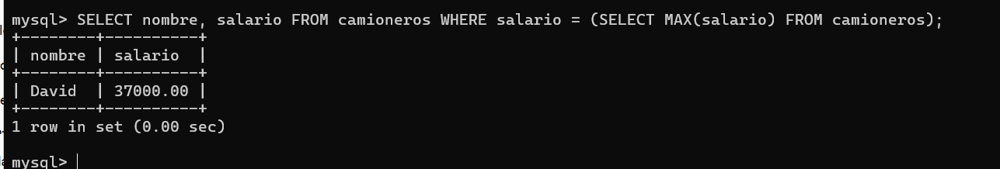
3.¿Cuántos camiones tengo en mi parque?
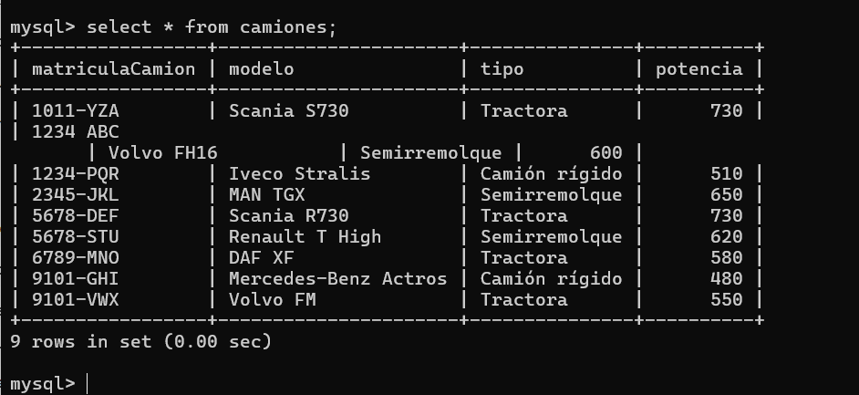
4. ¿De qué modelos son los camiones
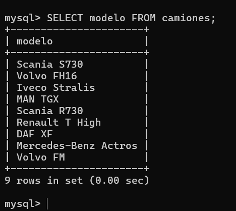
5. ¿Cuál es la descripción de todos los paquetes que son enviados a Barcelona (o cualquier otra provincia
dada
de
alta)?
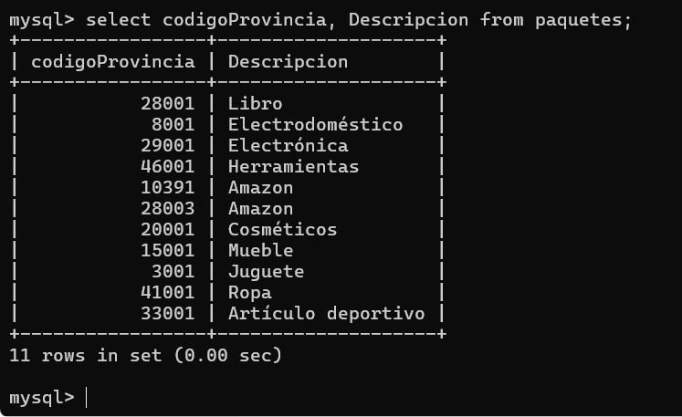
6. ¿Cuántos paquetes tienen a Cristina LM (o cualquier otro nombre) como destinatario?
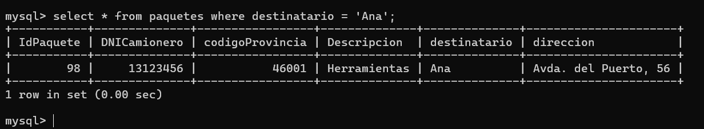
7. ¿Qué camiones ha conducido Juan PB (u otro camionero) en el último año?
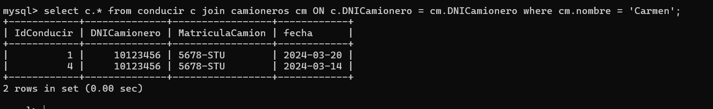
8. ¿De cuantos camioneros desconozco su lugar de residencia? ¿Quiénes son?
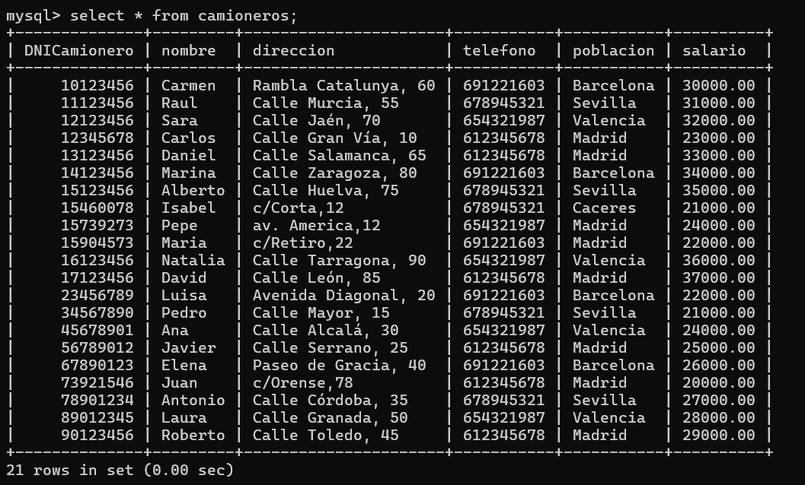
9. ¿Qué camión tiene la potencia máxima y cuál es?

10. Eliminar el último paquete dado de alta, porque parece que contiene información incorrecta.
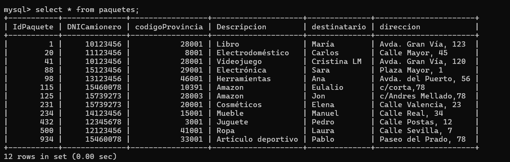
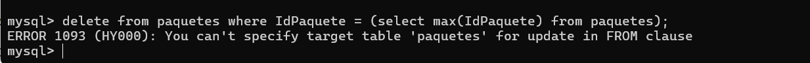
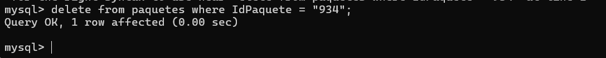
11. ¿Qué camiones se condujeron entre dos fechas determinadas?
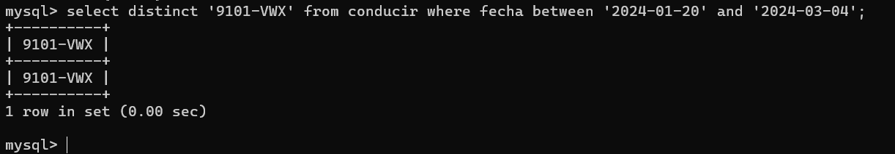
12. ¿Cuál es la cuantía a pagar a final de mes a toda la plantilla?
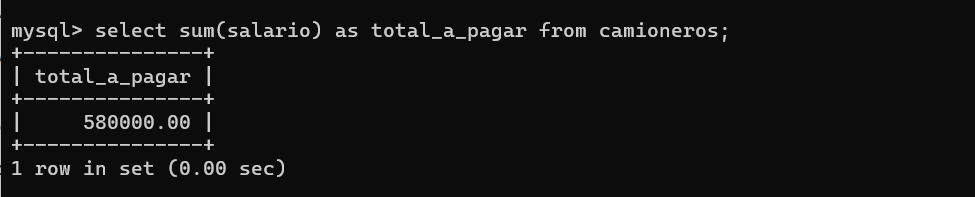
13. Necesitamos una nueva característica en los paquetes, que nos diga de qué tipo son: si urgentes,
normales, o
inmediatos (entrega en dos horas).
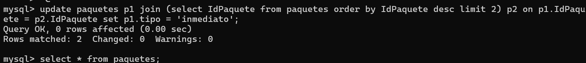
14. El primer paquete dado de alta, será urgente, los dos últimos inmediatos, y el resto (7 u 8)
normales.
Se puede
utilizar el orden de las claves primarias en lugar del orden de inserción (por si no se ha declarado
claves
autoincrementales).
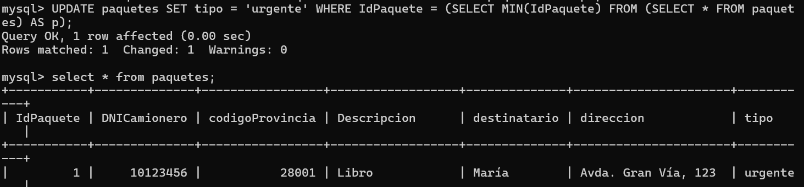
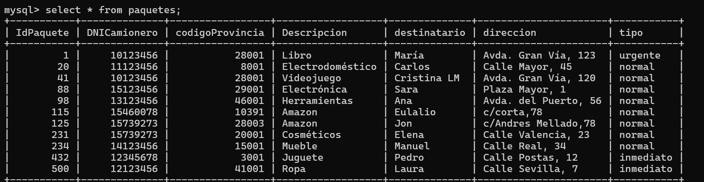
15. ¿Qué camioneros residen en Madrid con un sueldo superior a 3000? (ajustar provincia y sueldo)?
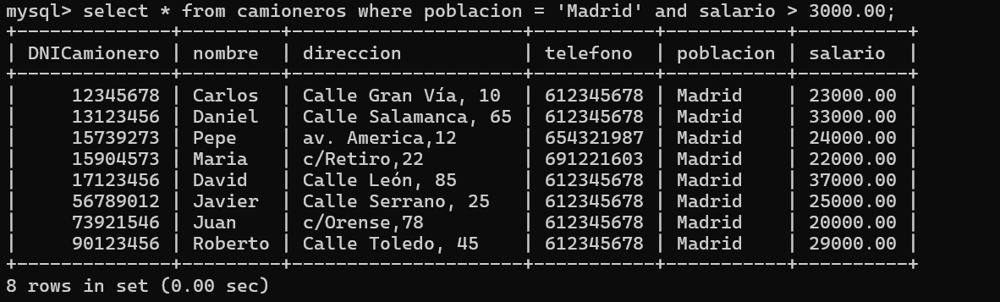
16. ¿Cuántos paquetes no tienen descripción y van a Pontevedra? (ajustar provincia:Madrid) ?
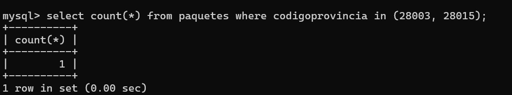
17. Dar de alta un nuevo empleado con el sueldo 100 € superior, a la parte entera del sueldo medio de
los
camioneros que
ya existen en la empresa.
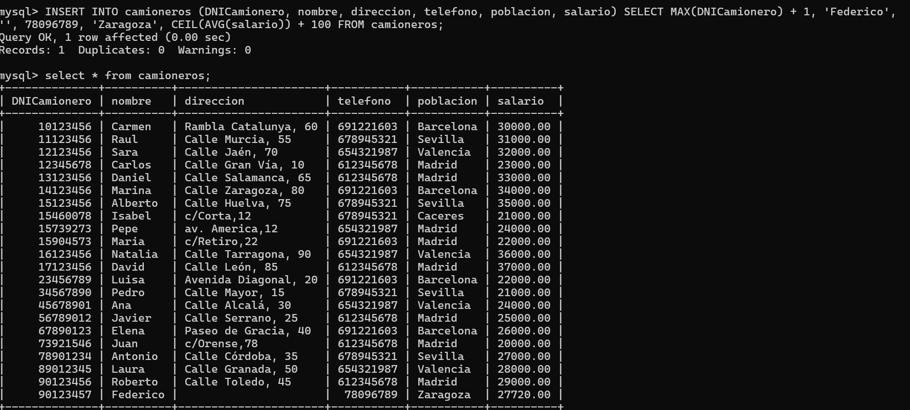
18. ¿De dónde son los empleados de mi plantilla? ¿Cuántos hay de cada una de las poblaciones?
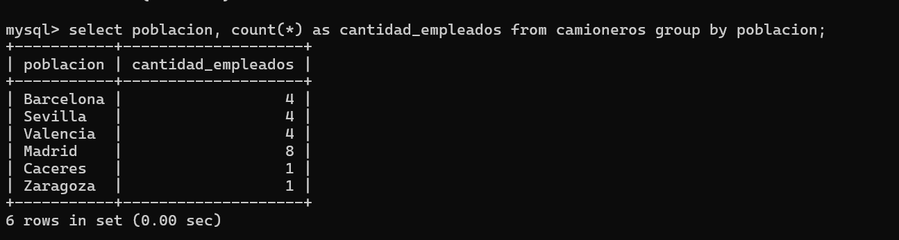
19. Simular una posible bajada de sueldo de un 10%, que será enviada a los trabajadores,anunciándoles
que
será revertida
con el final de la crisis. Esperaremos a la respuesta de aceptación para realizar la bajada real, si es
que
llega a
producirse.
20. Obtener un listado de las provincias registradas
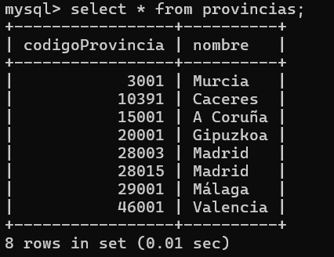
21. Generar, finalmente una bajada de sueldo del 5% sólo a los 6 camioneros de mayor sueldo
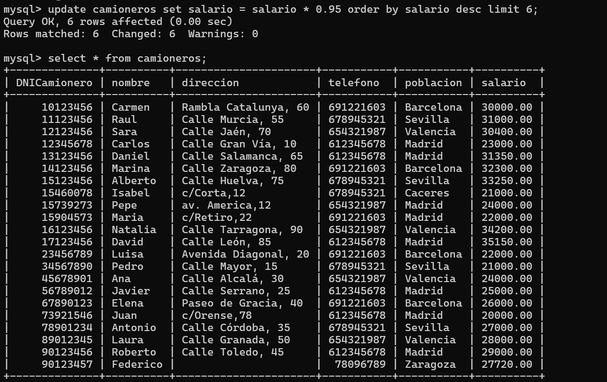
22. ¿Cuál es el sueldo medio de los camioneros de la empresa?
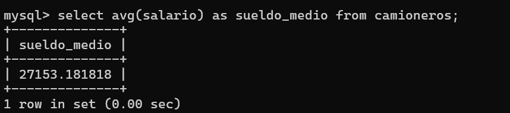
23. ¿Qué potencia media tienen los camiones de la empresa?
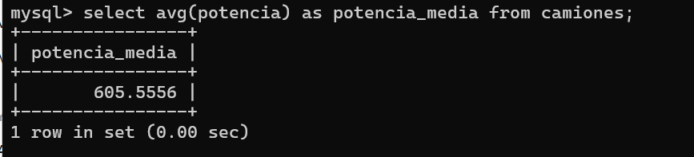
24. Número de viajes entre dos fechas concretas (en Navidades, en final de verano, …)

25. Número de viajes de un camionero en particular en un año.
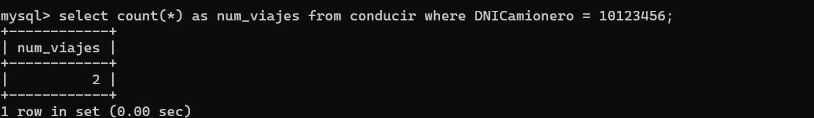
26. ¿Cuántos paquetes se dirigen a Albacete?
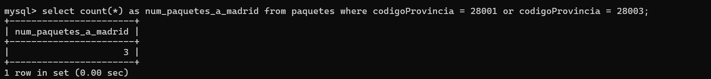
27. ¿Cuál es la provincia registrada que recibe menos paquetes?
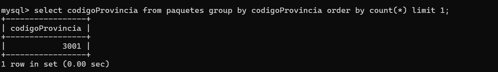
28. ¿Cuántos camioneros residen en Barcelona, y podrían pedir no trabajar el día del Carmen?
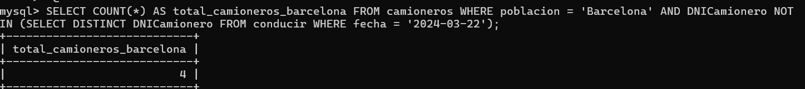
29. Sabiendo el nombre de una provincia, ¿cuántos paquetes han sido enviados a ella?
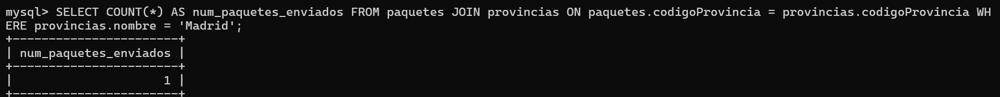
30. Obtener un listado de los códigos de todos los paquetes que tiene como destino Albacete (o cualquier
otra provincia)
31. ¿Qué camión condujo Francisco JB el día 21/04/2018? (ajustar nombre y fecha a los datos
introducidos)
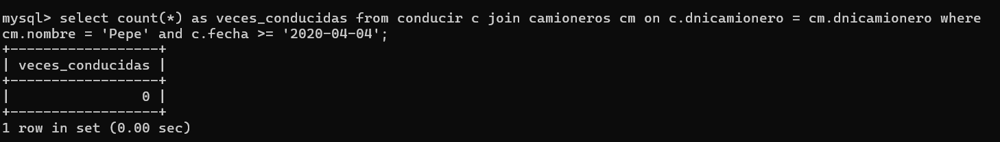
32. Obtener cuántos paquetes ha distribuido cada camionero de la plantilla (obteniendo su nombre).

33. ¿Cuál es el nombre de los camioneros que han llevado paquetes a Lugo?

34. ¿Cuáles son las provincias que todavía no han recibido ningún paquete?